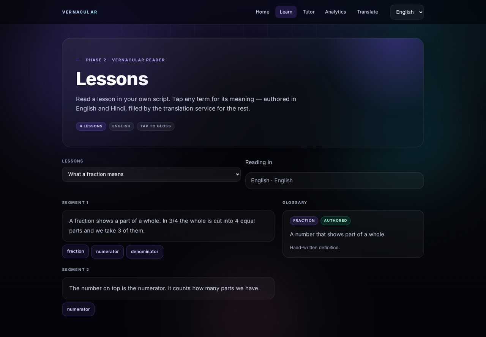

CDS208 · Vernacular education platform
Learn in the language you think in.
A student reads the lesson in their mother tongue, taps any term for an instant gloss, and is tutored by an agent that answers in that language — and refuses to invent facts. Every action becomes a row in an event log a teacher can read.
These are the real event names the app writes. One log, one source of truth for every number on the dashboard.
The gap is not translation
Students are taught in a language they do not speak at home.
Translation tools translate a sentence. They do not know which lesson you are on, what you got wrong, or what to give you next. The language gap sits between the student and the whole learning loop — reading, asking, being assessed.
of learners worldwide are not taught in a language they speak fluently. In some low- and middle-income countries it rises to 90%. (UNESCO GEM, 2025)
of Class 3 students in Indian government schools could not read a Class 2 level text. (ASER 2024)
One loop, five surfaces
Read → tap → ask → assess → measure. Every step is instrumented, so nothing is reconstructed after the fact.
The device is not the barrier
84% of rural Indian households now have a smartphone. The layer that is missing is the language layer — not the hardware.
What it does
Built to be honest about what it does not know.
The interesting part of this project is not that it translates. It is that every surface tells the truth about its own state — mock or live, authored or translated, grounded or outside the lesson.
Mother-tongue reader
Lesson segments render in the learner's script. Every key term is a button that glosses in place, labelled authored or translated.
Grounded tutor
Answers come from the segment you are reading. Ask something the lesson does not cover and it refuses, in your language, then gives one hint.
Honest translation
One cached service behind every surface. Provider, latency and cache state are shown, never implied. A mock result is labelled as a mock result.
Rule-first recommender
Failed a quiz? Revisit that lesson at easy difficulty. The model may phrase the reason; it never gets to pick an id outside the catalogue.
Analytics that trace back
Every visual on the dashboard maps to events a student generated. A coverage audit names the documented events that have never fired.
Runs with no key
No API key, no internet, no problem. Every AI path degrades to a labelled offline mock — so a demo cannot be broken by venue Wi-Fi.
The product
A real app, not a mockup.
These are screenshots of the running application, taken from the deployed build. Switch the tabs.

How it works
Three steps, one measurable loop.
Pick your language
Five Indic languages, done properly. The whole interface follows — nav, lessons, glosses, tutor replies, quiz feedback.
Read and tap
Content authored in English and Hindi; Tamil, Telugu and Bengali are filled by the translation service on first read and cached.
Ask and be assessed
A grounded tutor, a quiz that logs a real score, and a recommender that explains itself in the learner's language.
Under the hood
The services are framework-free. The front end was replaced once, and the brain did not change.
Translation, lessons, quizzes, the tutor, the recommender and the export pipeline are plain Python — plain arguments in, plain dicts out. FastAPI exposes them as JSON, and the frontend is static files served by the same process: no bundler, no CORS, one command to run.
FastAPI
14 endpoints, OpenAPI docs at /docs.
SQLite → Postgres
The swap is one file: core/db.py.
Sarvam AI
mayura:v1 for translation, sarvam-m for chat.
Power BI
Four CSVs plus a health file, on demand.
Bring your own lesson. Watch the dashboard fill.
Runs with no API key and no internet. Mock results are labelled, never disguised.